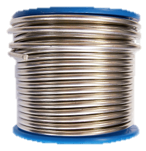
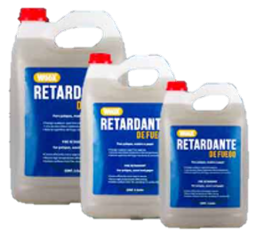

- Interdisciplinary Project -

In a world where the quality of the air we breathe directly affects our health and the sustainability of the planet, research on atmospheric pollutants is more relevant than ever. Substances like suspended particles, nitrogen oxides, sulfur dioxide, carbon monoxide, volatile organic compounds, and greenhouse gases have a significant impact on the environment and living beings. These pollutants not only aggravate global challenges such as climate change and ozone layer depletion, but also affect public health, causing respiratory diseases, cardiovascular issues, and allergies. Environmentally, pollutants compromise the vitality of ecosystems, damage vegetation, contaminate water bodies, and threaten biodiversity. In the face of this issue, it is essential to promote effective strategies to mitigate their emission and encourage sustainable practices that contribute to a cleaner and more balanced future. Discover with us how to face these challenges and build a healthier environment for everyone.
CO₂
50

CH₄
50
O₂
20

Normal
In the digital age, operating systems and networks are essential for the functioning of modern technologies. However, the materials used in the manufacturing of these components have a significant impact on the environment. These materials, which were historically used in the production of electronic equipment and network components, can cause serious damage to both the environment and human health if not properly managed.

It may be present in old insulation materials. It was widely used for its resistance to heat and corrosion. Prolonged exposure to asbestos can cause serious diseases such as asbestosis. Its use is banned in many countries, but it persists in old buildings.


Used in rechargeable batteries and some types of connectors. It is also used as a corrosion-resistant coating on certain components. It is a heavy metal that can be dangerous to human health and the environment. Modern technology seeks less harmful alternatives.


It may be present in some electronic components, such as switches and relays. It was also used in fluorescent lamps and old measuring devices. It is highly toxic and poses an environmental risk if not properly disposed of. Many countries have restricted its use through international agreements.

Found in soldering and cable connectors. It is used for its low melting point and good conductivity. However, it can be toxic if mishandled. Current regulations seek to reduce its use in electronic products.

Found in insulators and some types of capacitors. These compounds are highly toxic and persistent in the environment. They have been linked to health problems such as cancer and hormonal disorders, and their use is banned or strictly regulated in many countries.


Used as flame retardants in plastics and casings. They help prevent the spread of fire in electronic equipment and textiles. However, they can release toxic substances during combustion, and improper disposal may pose risks to health and the environment.
Electronic waste, also known as e-waste, is the set of waste from electronic devices that are no longer functional. Electronic waste, also known as e-waste, refers to all types of waste from electrical and electronic devices that have reached the end of their useful life. This term covers a wide range of products, including: (Make a list) Communication devices: Mobile phones, smartphones, tablets.